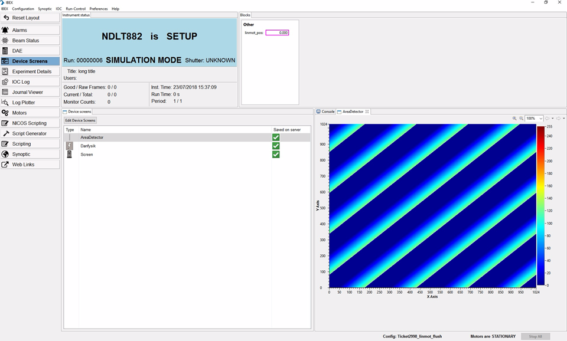

Create and Manage Device Screens
In IBEX, device screens give you access to a graphical interface to interact with each IOC running on your instrument.
If the IOC is not running, the device screen will show that the device is disconnected.
You can have as many device screens as you wish. The device screens need not be for devices in your configuration.
To view the device screen, double-click on the device in the device screens table and it will appear to the right of the ‘Device screens’ table by default.
Creating a Device Screen
Click on the ‘Edit Device Screens’ button just below the Device screens tab to opens the ‘Configure Device Screens’ dialog box.
To create a device screen, click ‘Add’ in the bottom left-hand corner.
You can rename the device in ‘Name’ box in the top right-hand corner. The default name is “Screen”.
To select a device to view, click on the ‘Target’ drop down box to select the device you want to view. The device does not need to be in your current configuration list of IOCs. However, if the device’s IOC is not running, the device screen will show that the device is disconnected.
Enter the values of any macros needed for the device in the ‘Value’ box.
Select ‘Save this device screen’ to save the device screen to IBEX server. Otherwise, select “Remove this device screen when IBEX is closed”.
Click ‘OK’ to save the changes you’ve made to the device screens. Clicking ‘Cancel’ will close the dialog without saving the changes.
Editing a Device Screen
Click on the ‘Edit Device Screens’ button just below the Device screens tab to opens the ‘Configure Device Screens’ dialog box.
To edit a device screen, click device screen you want to edit.
You can then edit the name of the device screen by clicking in the ‘Name’ box
You can switch to a different device by clicking the ‘Target’ drop down box and selecting a different device.
You can edit the value of any macro by selecting the macro in the ‘Properties’ table and entering the value of the macro in the ‘Value’ box.
Select ‘Save this device screen’ to save the device screen to IBEX server. Otherwise, select “Remove this device screen when IBEX is closed”.
Click ‘OK’ to save the changes you’ve made to the device screens. Clicking ‘Cancel’ will close the dialog without saving the changes.
Deleting a Device Screen
Click on the ‘Edit Device Screens’ button just below the Device screens tab to opens the ‘Configure Device Screens’ dialog box.
To delete a device screen, click device screen you want to delete. You can delete several different device screens at once by holding down the Ctrl key and selecting the device screens to delete.
Then click ‘Delete’ on the bottom left-hand
Click ‘OK’ to save the changes you’ve made to the device screens. Clicking ‘Cancel’ will close the dialog without saving the changes.
Special Device Screens
Live View Device Screen
{kind=link}
You instrument may have access to a Live View device screen which shows event data from the DAE in real time. This option is only available if your instrument is set up for Live View: it is running in event mode, and your instrument has an arrangement of detectors that can be mapped as a square. If you are in doubt, contact Freddie Akeroyd.